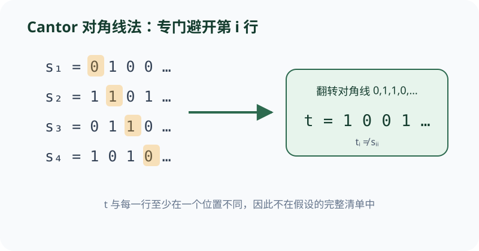

第 i 位专门与第 i 行不同，因此新序列一次性避开整个可数清单。
依据本地课程资料 discussion/dis05b.pdf 与 homework/hw06.pdf 重绘；交互用于解释概念，不替代题面或证明。

CS70 · 第 7 讲
本模块建立无限集合大小的精确语言（可数与不可数），用对角线法证明不可数性并揭示其边界，通过自指与归约证明核心计算问题的不可判定性，最后系统训练计数技术（stars-and-bars、容斥原理与组合恒等式）为概率论奠基。
在正式讨论可数性之前，需要建立集合"大小"的精确语言。对于有限集，我们用基数（元素个数）比较大小；对于无限集，Cantor 的洞见是：通过函数的存在性来比较。
定义（可数性）。 集合 \(S\) 称为可数的（countable），如果 \(S\) 是有限集，或者存在双射 \(f : \mathbb{N} \to S\)。若存在双射 \(f : \mathbb{N} \to S\)，则称 \(S\) 为可数无限（countably infinite）。不是可数的集合称为不可数（uncountable）。
定义（单射、满射、双射）。 设函数 \(f : A \to B\)：
\(f\) 是单射（injective, one-to-one）当且仅当 \(\forall a_1, a_2 \in A,\; a_1 \neq a_2 \Rightarrow f(a_1) \neq f(a_2)\)。等价地，\(f(a_1) = f(a_2) \Rightarrow a_1 = a_2\)。
\(f\) 是满射（surjective, onto）当且仅当 \(\forall b \in B,\; \exists a \in A,\; f(a) = b\)。
\(f\) 是双射（bijective）当且仅当它既是单射又是满射。
若存在单射 \(f : A \to B\)，则记 \(|A| \leq |B|\)。若存在满射 \(f : A \to B\)，则 \(|B| \leq |A|\)（需要选择公理，但在 CS70 的语境下我们通常处理可数选择）。
函数复合的性质。 给定 \(f : Y \to Z\) 和 \(g : X \to Y\)，复合函数 \(f \circ g : X \to Z\) 定义为 \((f \circ g)(x) = f(g(x))\)。
若 \(f\) 和 \(g\) 都是单射，则 \(f \circ g\) 是单射。
但 \(f\) 是满射不蕴含 \(f \circ g\) 是满射：\(g\) 的值域可能不覆盖 \(Y\)，导致 \(f \circ g\) 的值域比 \(f\) 小。反例：\(g : \{0,1\} \to \{0,1\},\; g(0)=g(1)=0\)，\(f : \{0,1\} \to \{0,1\},\; f(0)=0,\; f(1)=1\)，则 \(f\) 满射但 \(f \circ g\) 不是满射。
例。 判断函数 \(f : \mathbb{Z} \to \mathbb{Z}\)，\(f(n) = 2n + 1\) 是否为单射和满射。
单射性。 设 \(f(m) = f(n)\)，即 \(2m + 1 = 2n + 1\)。两边减 1 除以 2 得 \(m = n\)。因此 \(f\) 是单射。
满射性。 取 \(b = 0 \in \mathbb{Z}\)。若存在 \(a \in \mathbb{Z}\) 使得 \(f(a) = 0\)，则 \(2a + 1 = 0\)，即 \(a = -\frac{1}{2} \notin \mathbb{Z}\)。因此 \(0\) 没有原像，\(f\) 不是满射。
注。 此例说明单射不蕴含满射。对于无限集，真子集可以与原集等势——这是无限集与有限集的本质区别。
本节展示如何从已知可数集构造新的可数集。
定理（\(\mathbb{N} \times \mathbb{N}\) 可数）。 集合 \(\mathbb{N} \times \mathbb{N}\) 是可数无限的。
证明思路。 将 \(\mathbb{N} \times \mathbb{N}\) 的元素按"对角线"排列：\((0,0), (1,0), (0,1), (2,0), (1,1), (0,2), \ldots\)。第 \(d\) 条对角线上满足 \(i + j = d\)。这种"之字形"枚举给出双射 \(h : \mathbb{N} \to \mathbb{N} \times \mathbb{N}\)。
定理（可数集的笛卡尔积）。 若 \(A\) 和 \(B\) 可数，则 \(A \times B\) 可数。
证明。 存在双射 \(\alpha : \mathbb{N} \to A\)（或到 \(\mathbb{N}\) 的子集）和 \(\beta : \mathbb{N} \to B\)。定义 \(\phi : \mathbb{N} \times \mathbb{N} \to A \times B\) 为 \(\phi(i,j) = (\alpha(i), \beta(j))\)。\(\phi\) 是双射，因此 \(A \times B\) 与 \(\mathbb{N} \times \mathbb{N}\) 等势，从而是可数的。
由数学归纳法，有限个可数集的笛卡尔积仍可数。
定理（Bernstein–Schroder）。 若存在单射 \(f : A \to B\) 和单射 \(g : B \to A\)，则存在双射 \(h : A \to B\)，即 \(|A| = |B|\)。
这一定理让我们无需显式构造双射即可证明等势。
推论。 \((0,1)\) 与 \(\mathbb{R}^+ = (0,\infty)\) 等势。
证明。 单射 \(f : (0,1) \to (0,\infty)\)，\(f(x) = x\)（显然单射）。单射 \(g : (0,\infty) \to (0,1)\)，\(g(x) = \frac{1}{x+1}\)（若 \(g(x) = g(y)\) 则 \(\frac{1}{x+1} = \frac{1}{y+1}\)，故 \(x = y\)）。由 Bernstein–Schroder 定理，二者等势。
例。 证明正有理数集 \(\mathbb{Q}^+\) 是可数的。
证明。 每个正有理数可唯一表示为 \(\frac{p}{q}\)，其中 \(p, q \in \mathbb{N}\) 且 \(\gcd(p,q) = 1\)。定义 \(\psi : \mathbb{Q}^+ \to \mathbb{N} \times \mathbb{N}\) 为 \(\psi(\frac{p}{q}) = (p, q)\)。由于表示唯一，\(\psi\) 是单射。因此 \(|\mathbb{Q}^+| \leq |\mathbb{N} \times \mathbb{N}| = |\mathbb{N}|\)。又 \(\mathbb{Q}^+\) 是无限集，故可数无限。
现在我们证明第一个不可数集。
定理（Cantor）。 区间 \([0,1]\) 中的实数集是不可数的。
证明（对角线法）。 假设相反，存在双射 \(f : \mathbb{N} \to [0,1]\)，即可以列出所有 \([0,1]\) 中的实数：\(f(0), f(1), f(2), \ldots\)。将每个 \(f(j)\) 写成十进制展开 \(0.d_{j1} d_{j2} d_{j3} \ldots\)（对有限小数采用非终止展开，如 \(0.5000\ldots\) 而非 \(0.4999\ldots\)，以保证表示唯一）。
构造新实数 \(e = 0.e_1 e_2 e_3 \ldots\)，其中 \(e_j = (d_{jj} + 2) \bmod 10\)。对每个 \(j\)，\(e\) 的第 \(j\) 位与 \(f(j)\) 的第 \(j\) 位相差 2，故 \(e \neq f(j)\)。因此 \(e\) 不在列表中——矛盾。
关键观察。 证明中构造的 \(e\) 确实是 \([0,1]\) 中的实数，但不保证是有理数。这是对角线法对有理数失效的根本原因。
证明调试（DIS 5B）。 考虑伪证："有理数集 \(\mathbb{Q}[0,1]\) 不可数"。证明完全模仿 Cantor 对角线法，构造 \(e\) 使得 \(e\) 与每个 \(f(j)\) 在第 \(j\) 位不同。错误在于：\(e\) 可能是无理数（事实上，由于各位数字的任意选择，\(e\) 几乎必然是无理数）。\(e\) 不在有理数列表中不构成矛盾，因为列表本来就只包含有理数。
例。 证明无限二进制字符串集合 \(\{0,1\}^\infty\) 不可数。
证明。 假设存在枚举 \(s^{(0)}, s^{(1)}, s^{(2)}, \ldots\)，其中 \(s^{(j)} = s^{(j)}_1 s^{(j)}_2 s^{(j)}_3 \ldots\)。构造 \(t = t_1 t_2 t_3 \ldots\)，其中 \(t_j = 1 - s^{(j)}_j\)（取反）。则 \(t\) 与每个 \(s^{(j)}\) 在第 \(j\) 位不同，故 \(t\) 不在列表中——矛盾。
对角线法和编码技巧有广泛应用。
递增函数不可数。 设 \(\mathcal{I}\) 为所有递增函数 \(f : \mathbb{N} \to \mathbb{N}\)（即 \(x \geq y \Rightarrow f(x) \geq f(y)\)）的集合。假设存在枚举 \(f_0, f_1, f_2, \ldots\)。定义 \(f(n) = 1 + \sum_{i=0}^{n} f_i(n)\)。可证 \(f\) 是递增的，且对每个 \(n\)，\(f(n) > f_n(n)\)，故 \(f\) 不在列表中——矛盾。因此 \(\mathcal{I}\) 不可数。
递减函数可数。 设 \(\mathcal{D}\) 为所有递减函数 \(f : \mathbb{N} \to \mathbb{N}\) 的集合。由于值域是 \(\mathbb{N}\) 的非空子集，由良序原理存在最小值。函数只能有有限次"下降"，因此每个递减函数可由一个有限序列（下降点的位置）编码。有限序列集是可数的，故 \(\mathcal{D}\) 可数。
几何应用。 平面上两两不重叠的圆盘集是可数的：每个圆盘内部包含至少一个有理点 \((x,y) \in \mathbb{Q} \times \mathbb{Q}\)，不同圆盘包含不同有理点，故圆盘集与 \(\mathbb{Q} \times \mathbb{Q}\) 的子集等势。但两两不重叠的圆（仅圆周，不含内部）集可能不可数：圆 \(C_r = \{(x,y) : x^2 + y^2 = r\}\) 对 \(r \in \mathbb{R}^+\) 两两不重叠，有不可数多个。
图论应用。 所有有限图（顶点集 \(V \subseteq \mathbb{N}\)）的集合可数：按顶点数 \(k\) 分层，每层有限，可数并可数。但固定可数无限顶点集上、每个顶点度数恰为 2 的图集不可数：将无限二进制字符串编码为不同长度的简单环的连接。无限树集也不可数：在无限路径图 \(G_1\) 上，根据比特串在相应顶点上附加叶子。
例。 证明 \(\mathbb{N}\) 的所有有限子集构成的集合 \(\mathcal{F}(\mathbb{N})\) 是可数的。
证明。 对每个 \(k \in \mathbb{N}\)，令 \(\mathcal{F}_k\) 为 \(\mathbb{N}\) 的大小为 \(k\) 的子集构成的集合。存在单射 \(\phi_k : \mathcal{F}_k \to \mathbb{N}^k\)，\(\phi_k(\{a_1,\ldots,a_k\}) = (a_1,\ldots,a_k)\)（排序后）。\(\mathbb{N}^k\) 可数，故 \(\mathcal{F}_k\) 可数。而 \(\mathcal{F}(\mathbb{N}) = \bigcup_{k=0}^{\infty} \mathcal{F}_k\) 是可数并，故可数。
可计算性理论回答"什么问题可以被算法解决"。核心工具是归约（reduction）。
定义（归约）。 问题 \(A\) 可归约到问题 \(B\)（记 \(A \leq B\)），若存在可计算函数将 \(A\) 的实例转化为 \(B\) 的实例，且答案保持。若 \(A \leq B\) 且 \(A\) 不可计算，则 \(B\) 不可计算。
停机问题。 \(\text{TestHalt}(P, x)\) 判定程序 \(P\) 在输入 \(x\) 上是否停机，是不可计算的（标准对角线证明）。
应用：PrintsHW 不可计算。 定义 \(\text{PrintsHW}(P, x)\) 判定 \(P(x)\) 是否打印 "Hello World!"。构造归约：给定 \(P, x\)，构造 \(P'\) 为"运行 \(P(x)\) 并抑制所有打印语句，然后打印 'Hello World!'"。则 \(P(x)\) 停机 \(\Leftrightarrow\) \(P'(x)\) 打印 "Hello World!"。若 \(\text{PrintsHW}\) 可计算则 \(\text{TestHalt}\) 可计算——矛盾。
关键区分。 "\(P\) 在第 \(k\) 行之前打印 HW"不可计算（因为"是否执行第 \(k\) 行"依赖于程序逻辑，不可判定），但 "\(P\) 在前 \(k\) 步内打印 HW"可计算（只需模拟 \(k\) 步）。
代码可达性。 \(\text{Reachable}(M, x, L)\) 判定执行 \(M(x)\) 是否到达第 \(L\) 行。归约：构造 \(M\) 在第 1 行运行 \(P(x)\)，第 2 行 return。则 \(P(x)\) 停机 \(\Leftrightarrow\) \(M\) 到达第 2 行。故 \(\text{Reachable}\) 不可判定。
不动点问题。 程序 \(P\) 的不动点是输入 \(x\) 使得 \(P(x) = x\)。判定不动点存在性不可计算：构造 \(F'(y)\) 为"运行 \(F(x)\)，返回 \(y\)"。若 \(F(x)\) 停机，则 \(F'(y) = y\) 对所有 \(y\) 成立（每个输入都是不动点）；若 \(F(x)\) 不停机，则 \(F'\) 无不动点。
例。 证明判定"程序 \(P\) 在输入 \(x\) 上是否输出数字 42"是不可计算的。
证明（归约）。 给定 \(P, x\)，构造 \(P'\) 为：运行 \(P(x)\)，若停机则输出 42。形式化：
def P'(z):
run P(x) # 忽略 z
return 42
若 \(P(x)\) 停机，则 \(P'(z) = 42\) 对所有 \(z\) 成立，故 \(P'\) 输出 42。若 \(P(x)\) 不停机，则 \(P'\) 不返回任何值，故不输出 42。因此 \(\text{TestHalt}(P, x)\) 可归约到"\(P'\) 是否输出 42"。若后者可计算则停机问题可计算——矛盾。
定义（Kolmogorov 复杂性）。 位串 \(x\) 的 Kolmogorov 复杂性 \(K(x)\) 是返回 \(x\) 的最短程序的长度（在固定通用编程语言下）。
Berry 悖论。 "不能用少于 280 个字符定义的最小正整数"——这个短语本身只有约 67 个字符（含空格），却定义了那个整数。这是自指悖论，说明"可定义性"不能作为严格的数学概念。
不可压缩性定理。 对任意 \(n\)，存在长度为 \(n\) 的位串 \(x\) 使得 \(K(x) \geq n\)。
证明。 长度为 \(n\) 的位串有 \(2^n\) 个。长度小于 \(n\) 的位串有 \(\sum_{i=0}^{n-1} 2^i = 2^n - 1\) 个。每个短程序至多产生一个输出，因此至多 \(2^n - 1\) 个长度为 \(n\) 的串可被压缩到少于 \(n\) 位。故至少有一个长度为 \(n\) 的串不可压缩。
\(K(x)\) 的不可计算性。 假设存在程序 \(K\) 计算 \(K(x)\)。设计程序 \(P(n)\)：枚举所有长度为 \(n\) 的位串，用 \(K\) 找出 Kolmogorov 复杂性最大的串（字典序最小者）。设 \(P\) 编译后为 \(m\) 位。取 \(n \gg m\)。\(P(n)\) 输出串 \(x\) 满足 \(K(x) \geq n\)（不可压缩）。但 \(P\) 是一个 \(m\) 位的程序，加上输入 \(n\) 的对数长度描述，总共用远少于 \(n\) 位描述了 \(x\)——矛盾。
例。 证明至少有一半的长度为 \(n\) 的位串满足 \(K(x) \geq n - 1\)。
证明。 长度小于 \(n-1\) 的位串有 \(\sum_{i=0}^{n-2} 2^i = 2^{n-1} - 1\) 个。每个这样的串至多是一个程序的编码，因此至多 \(2^{n-1} - 1\) 个长度为 \(n\) 的串满足 \(K(x) < n - 1\)。长度为 \(n\) 的串共有 \(2^n\) 个，故至少有 \(2^n - (2^{n-1} - 1) = 2^{n-1} + 1\) 个串满足 \(K(x) \geq n - 1\)，这超过了一半。
计数是概率论的基础。本节训练三个核心工具。
Stars-and-Bars。 方程 \(x_0 + x_1 + \cdots + x_k = n\) 的非负整数解个数为 \(\binom{n+k}{k}\)。
证明。 将解表示为 \(n\) 个 ★（stars）和 \(k\) 个 |（bars）的序列。\(x_i\) 是第 \(i\) 个与第 \(i+1\) 个 bars 之间的 stars 数。序列长度为 \(n+k\)，选择 \(k\) 个位置放 bars，共 \(\binom{n+k}{k}\) 种。
正整数解（每个 \(x_i \geq 1\)）：令 \(y_i = x_i - 1 \geq 0\)，则 \(y_0 + \cdots + y_k = n - (k+1)\)，解数为 \(\binom{n-1}{k}\)。
多项式系数。 给定 \(n_1\) 个 A、\(n_2\) 个 B、\(\ldots\)、\(n_k\) 个第 \(k\) 种字母（\(\sum n_i = n\)），不同排列数为 \(\frac{n!}{n_1! n_2! \cdots n_k!}\)。
容斥原理（PIE）。 对有限集 \(A_1, \ldots, A_n\)， \[ \left|\bigcup_{i=1}^{n} A_i\right| = \sum_{i} |A_i| - \sum_{i<j} |A_i \cap A_j| + \sum_{i<j<k} |A_i \cap A_j \cap A_k| - \cdots + (-1)^{n+1}|A_1 \cap \cdots \cap A_n|. \]
Fermat 手链。 用至多 \(n\) 种颜色构造长度为素数 \(p\) 的手环（旋转等价），排除单色序列后，非等价类数为 \(\frac{n^p - n}{p}\)。由于这是计数结果必为整数，故 \(p \mid (n^p - n)\)，即 \(n^p \equiv n \pmod{p}\)——费马小定理。
例。 将 12 个相同的球放入 5 个不同的盒子，要求前两个盒子每个至少放 2 个球，其余盒子可以为空，有多少种方法？
解。 令 \(x_1, x_2 \geq 2\)，\(x_3, x_4, x_5 \geq 0\)，\(x_1 + x_2 + x_3 + x_4 + x_5 = 12\)。令 \(y_1 = x_1 - 2\)，\(y_2 = x_2 - 2\)，\(y_i = x_i\)（\(i \geq 3\)），则 \(y_i \geq 0\) 且 \(y_1 + y_2 + y_3 + y_4 + y_5 = 8\)。由 stars-and-bars，解数为 \(\binom{8+4}{4} = \binom{12}{4} = 495\)。
依据本地课程资料 discussion/dis05b.pdf 与 homework/hw06.pdf 重绘；交互用于解释概念，不替代题面或证明。

可数包括有限集和可数无限集。整数集 \(\mathbb{Z}\) 和有理数集 \(\mathbb{Q}\) 都是可数无限的——它们与 \(\mathbb{N}\) 等势，但并非有限。
表示不唯一只是技术细节（可通过约定非终止展开规避）。根本原因是：对角线构造出的新数 \(e\) 可能是无理数，因此 \(e\) 不在有理数列表中并不构成矛盾——列表本来就只包含有理数。
错误。\(g\) 的值域可能不覆盖 \(f\) 的整个定义域 \(Y\)，导致 \(f \circ g\) 的值域比 \(f\) 小。反例：\(g\) 为常值函数时，\(f \circ g\) 也是常值函数，不可能满射（除非 \(Z\) 只有一个元素）。
过于绝对。对许多具体程序，我们可以通过分析代码证明它会停机或不会停机。停机问题不可计算说的是：不存在一个**通用算法**能正确判定**所有**程序-输入对。
错误。存在不同层次的无限：\(\mathbb{N}\) 是可数无限的最小层次；\(\mathbb{R}\) 是不可数的，基数严格更大。Cantor 定理进一步证明：任何集合的幂集基数严格大于原集合，因此存在无穷多个不同的基数层次。
问题：下列哪个集合是不可数的？
问题：在 DIS 6A 中，"PrintsHW(P,x)" 不可计算的证明是通过从停机问题归约完成的。以下哪项最准确地描述了这一归约？
问题：方程 \(x_0 + x_1 + x_2 = 10\) 的正整数解的个数是？
问题：为什么 Cantor 对角线法不能证明 \([0,1]\) 中的有理数不可数？
discussion/dis05b.pdf · Problem 1–4 · confidence: high · The number e constructed in the proof can be irrational (in fact, it has to be irrational). And hence e being different from all the numbers f(j) does not lead to a contradiction.discussion/dis05b.pdf · Problem 4 · confidence: high · As shown in lecture, N × N is countable by creating a zigzag map that enumerates through the pairs: (0,0), (1,0), (0,1), (2,0), (1,1), ...discussion/dis06a.pdf · Problem 1 · confidence: high · Uncomputable. We will reduce TestHalt to PrintsHW(P, x). P'(x): run P(x) while suppressing print statements; print("Hello World!").discussion/dis06a.pdf · Problem 2 · confidence: high · Program M reaches line 2 if and only if P(x) halted. Thus, we have implemented a solution to the halting problem — contradiction.discussion/dis06a.pdf · Problem 3–4 · confidence: high · (n1 + n2 + ... + nk)! / (n1! n2! ... nk!); y0 + ... + yk = n 非负解个数为 (n+k choose k)，正整数解为 (n-1 choose k)。homework/hw06.pdf · Problem 1 · confidence: high · X ∩ Y is a subset of X, which is countable. X ∪ Y is a superset of Y, which is uncountable. ⋂_{i∈X} A_i is sometimes countable, sometimes uncountable.homework/hw06.pdf · Problem 2 · confidence: high · The set of all finite graphs G = (V, E), for V ⊆ N, is countable. The set of degree-2 graphs on countable vertices is uncountable (encode bitstrings as cycle lengths).homework/hw06.pdf · Problem 3 · confidence: high · Countable. Each disk must contain at least one rational point... Possibly uncountable. Consider the circles Cr = {(x,y) : x^2 + y^2 = r} for each r ∈ R.homework/hw06.pdf · Problem 4 · confidence: high · We can prove this by reducing from the Halting Problem. If F(x) halts, F'(y) will always just return y, so every input is a fixed point.homework/hw06.pdf · Problem 5 · confidence: high · The number of strings of length n is 2^n. The number of strings shorter than length n is 2^n − 1. Therefore there must be strings of length n that cannot be compressed.homework/hw06.pdf · Problem 7 · confidence: high · Since p is prime, rotating any sequence by less than p spots will produce a new sequence... the total number of non-equivalent patterns are (n^p − n)/p.cs70-cheatsheet.pdf · Note 10 / Note 7 · confidence: medium · FLT if x coprime to p, x^(p-1) ≡ 1 (mod p) or x^p ≡ x (mod p); 计数公式 (n+k choose k) 等。discussion/dis06b.pdf · 未知 · confidence: low · 模块清单的 sourceFiles 包含 dis06b.pdf，但 documents 数组中未提供其 questionTextContents 或 solutionTextContents，无法提取具体证据。